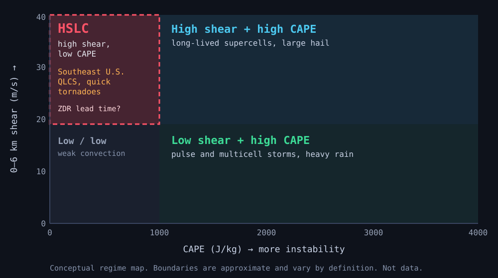

cm1lab toolkit, and two rounds of trained emulators scored against persistence. research plan ensembles across environments, HSLC and ZDR-column experiments, and coupling to the flood model. not shown that any emulator generalizes beyond the one storm it saw, or that it is faster than CM1 (speed is not measured yet).I work on this as an independent SVRWx numerical 3-D modeling effort alongside my undergraduate research at WKU's DSOC and AI Research Lab. CM1 fits because every physical choice is a namelist switch I can change one at a time. The emulator work asks a different question of the same model: how much of CM1's short-range behaviour can a small network learn, and where does it break?
Data
The CM1 run the emulators learn from built
An idealized supercell in a Weisman–Klemp type environment, run with CM1 r21.1 under WSL2 on my laptop. Everything below is read from the run's own namelist and output.
- model
- CM1 r21.1, built with gfortran 13.3, Open MPI 4.1.6 and netCDF 4.9.2 (Ubuntu 24.04 in WSL2), 4 MPI ranks
- grid
80 × 80 × 150cells,dx = dy = 600 m,dz = 100 m: a 48 × 48 × 15 km domain that moves with the storm (umove = 12.5,vmove = 3.0m/s)- physics
- Morrison microphysics (
ptype = 5), TKE subgrid closure (sgsmodel = 1), 5th-order advection with WENO on scalars,psolver = 3, open lateral boundaries, free-slip lower boundary, constant surface fluxes - environment
- analytic Weisman–Klemp sounding (
isnd = 5), warm-bubble initiation (iinit = 1) - output
- every 100 s to
timax = 17,000 s: 171 outputs, 8.8 GB of netCDF. Wall time was about 23.5 h on a machine with roughly 3 GB of usable memory in WSL. - training cache
- coarsened 2× horizontally and 3× vertically to
40 × 40 × 50(1.2 km × 300 m), 11 variables, 580 MB; split by time into outputs 0–119 (train), 119–153 (validation) and 153–171 (test)
Base-state environment read from the run's cache: the wind turns and strengthens with height, about 31 m/s of bulk shear over the lowest 6 km. Winds shown relative to the ground (the run's motion is added back).
The storm intensifies, then keeps cycling. Validation and test are later times of the same storm, which is easier than a different storm. Keep that in mind for every number below.
Software
cm1lab: a toolkit for training emulators on CM1 output built
About 5,100 lines of Python and 45 tests, with a command line and a small GUI. A physics emulator toolkit, not a chatbot: the networks learn only from CM1 data.
- preparereads netCDF, GrADS or npz; coarsens; builds a memory-mapped cache and per-level statistics
- trainhistory frames + base state + conditioning in; next frame out; rollout curriculum 1 → 3 steps
- evalrollouts on held-out times scored in physical units against persistence
- predictautoregressive rollout written as CM1-style netCDF or GrADS
- make-ensemblewrites CM1 run folders and a Slurm script; it does not run CM1 not yet used
unet3d(default): 3-D U-Net with FiLM conditioning; 1.8 M or 4.1 M parameters herefno3d: Fourier neural operator, for smooth, periodic-ish fieldstransformer3d: patch transformer, for more data and memorypointwise: per-cell network, aimed at emulating a microphysics scheme alone
- patch 16 × 32 × 32, batch 2, learning rate 3 × 10⁻⁴, mixed precision, EMA 0.99
- predict
last_frame + scale × f(…); input noise for rollout robustness - loss: weighted MSE + gradient + spectral terms; divergence, positivity and total-water terms available
- about 10 minutes (1.8 M) or 16 epochs × 58 s (4.1 M) on a GTX 1650 with 4 GB
I also wrote a standalone trainer that learns while CM1 is still running, reading each new output as it appears. It is how I first measured against the gate in the planning documents (G2: validation MSE at most 0.2 of persistence's, i.e. five times better). See the live-training chart below.
Measured
Results on held-out times of one storm
Skill = 1 − RMSE(emulator) / RMSE(persistence), in physical units, where persistence assumes nothing changes from the last frame. +0.22 means 22 % lower error; below zero is worse than doing nothing. Each step is 100 s.
| Model (run 2) | Split | Dynamics +100 s | Dynamics +500 s | Hydromet. +100 s | Hydromet. +500 s | w +100 s | Total-water error |
|---|---|---|---|---|---|---|---|
| 1.8 M parameters | validation | +0.13 | +0.06 | +0.06 | +0.01 | +0.28 | −4.8 % |
| 4.1 M, dropout 0.1, weight decay 0.05 | validation | +0.22 | +0.09 | +0.14 | +0.11 | +0.37 | −4.0 % |
| 1.8 M parameters | test | +0.14 | +0.10 | +0.05 | +0.02 | +0.29 | −5.9 % |
| 4.1 M, dropout 0.1, weight decay 0.05 | test | +0.22 | +0.11 | +0.14 | +0.12 | +0.36 | −6.3 % |
Dynamics = u, v, w, θ, pressure; hydrometeors = qc, qr, qi, qs, qg. Five-step rollouts from four starting times per split. I re-ran this comparison on 22 Nov 2026; the earlier project handoff listed it as not yet verified.
Skill by training epoch
Run 1 used 113 outputs and no regularization; the larger model overfit. Run 2 used 171 outputs, dropout and weight decay, and the larger model won. The rollout horizon steps up 1 → 2 → 3 during training, so curves jump when the task gets harder.
Skill by variable
Validation period. Vertical velocity (+0.37) and potential temperature (+0.30) gain most at +100 s; pressure (+0.05) and rain (+0.02) gain almost nothing.
Skill decays with lead time
Larger model, validation. Skill decays with lead time (w from +0.37 to +0.16, θ from +0.30 to +0.02); rain and pressure never gain much and end near zero. Every variable stays slightly above zero for this model, which the first-run larger model did not manage.
Skill by lead, all variables
| Variable | +100 s | +200 s | +300 s | +400 s | +500 s |
|---|
Live-trained emulator against the gate
A 0.81 M-parameter U-Net trained while CM1 was still running and validated on the newest outputs: stuck near an MSE ratio of 0.6, about three times short of the 0.2 gate. The ratio is relative to "nothing changes" (1.0).
Read before citing
What this does not show, and what broke along the way
- One storm. Validation and test are later times of the same simulation. A different environment would score worse, and I have not measured by how much.
- Gate G2 is not met. +0.22 skill is an MSE ratio near 0.6, about three times above the 0.2 target. The live trainer agrees.
- Short horizons only. Five steps, 500 s. By then θ has almost no skill left, and rain and pressure never had much.
- Smoothing. Small-scale energy and peak updrafts are under-represented.
- Coarsened data. The cache is 1.2 km × 300 m, not the 600 m × 100 m the run was made at.
- Speed is unmeasured. I have no emulator-versus-CM1 timing yet, so I make no speed-up claim.
- Validation loss exploded at rollout length 3: near-empty levels had a tiny standard deviation, so later values became "12,000-sigma" outliers. Fixed with a per-level floor at 0.25× the variable's overall spread, clipping at ±20 and clamping rollouts at ±8.
- A
log1p(q / 10⁻⁶)hydrometeor transform turned small errors into ~18× errors in physical mixing ratio. Using 10⁻⁴ cut hydrometeor error and total-water drift sharply. - The GUI read tkinter fields from a worker thread; a test that drove the GUI found it.
- The larger model overfit the first run (training loss well below validation). More data plus dropout, weight decay and early stopping reversed that on the second run.
- Reading a live
cm1out.nchit HDF5 file locks; the trainer copies the file first.
Roadmap
Next steps plan
Ordered by how much each would change what the numbers mean.
- An ensemble of CM1 runs across instability, shear and moisture so validation can split by run, which is the honest test of generalization.
cm1lab make-ensemblealready writes the run folders and a Slurm script; I have not launched an ensemble yet. - Measure speed and baselines. Time an emulator rollout against CM1 on the same hardware, and add a simple non-ML baseline beside persistence.
- Longer, sharper rollouts. Stronger spectral and conservation terms, noise injection, and possibly a sharpening head, judged by object and spectral scores, not RMSE alone.
- The HSLC and ZDR-column program below: environments chosen on purpose, with a polarimetric forward operator to turn CM1 output into a ZDR proxy (CM1 does not output ZDR itself).
- Rain for the flood model. Cheaper storm ensembles are only useful to emergency management if their rainfall can drive the flood solver; see the NWP → flood bridge.
Research questions
The science research plan


- HSLC ZDR columns. Test how ZDR columns behave in high-shear, low-CAPE environments typical of the southeastern U.S., where instability is low but shear is extreme: do column depth or area lead the first severe signature, and by how much?
- Which simulation is closest to reality? Apply findings to real radar observations and to higher-complexity models, and compare.
- Operational features. Investigate other dual-polarization features that could improve real-time tracking and forecasting of QLCS evolution and severe hazards.
- Real-event reconstruction. Simulate specific events (a derecho case among them) and run selected tornado cases in high detail.
The supercell run above is a high-CAPE, high-shear case. It is the testbed for the tooling, not yet an HSLC result.
Method
Experiment design plan
A factorial sweep keeps changes interpretable: vary one thing at a time first, then combinations, then ensembles.
| Factor | Levels (proposed) | How it is set | Why |
|---|---|---|---|
| Instability (CAPE) | 3 (low → moderate) | Scale boundary-layer moisture in the sounding file | Span the HSLC regime and just outside it |
| 0–6 km shear | 3 | Rescale hodograph winds in the sounding file | Isolate shear's role at fixed CAPE |
| Microphysics | 3 (ptype 5 / 26 / 27) | Morrison vs NSSL 2-moment (graupel, graupel + hail) | ZDR-relevant drop and ice treatment differs by scheme |
| Horizontal spacing | 2 (500 m, 250 m) | dx, dy, with dz adjusted | Resolve updraft and cold-pool structure |
| Initial perturbation | 5–10 members | irandp with numrand | Report spread rather than a single storm |
Design size
Full factorial grows quickly, so a staged design (A idealized → B sweep → C ensemble → D real events, see the EM page) is the practical path.
Starting point
Config sketch
An excerpt for an idealized supercell/QLCS-style run on a sounding file. Parameter names and values follow the namelist reference; everything else keeps the defaults in the config files that ship with CM1. It is a starting point, not a validated configuration, and it is not the namelist of the run above (that one uses the analytic isnd = 5 sounding at 600 m / 100 m).
¶m0
nx = 400, ny = 400, nz = 60,
/
¶m1
dx = 500., dy = 500., dz = 250.,
dtl = 3.5, timax = 10800., tapfrq = 300.,
/
¶m2
cm1setup = 1, sgsmodel = 1, adapt_dt = 1,
hadvordrs = 5, vadvordrs = 5, hadvordrv = 5, vadvordrv = 5, idiff = 0,
imoist = 1, ptype = 26, eqtset = 2,
psolver = 2, icor = 1,
wbc = 2, ebc = 2, sbc = 2, nbc = 2, bbc = 1, tbc = 1, irdamp = 1,
isnd = 7, ! read input_sounding
iinit = 1, ! warm bubble (3 = line of bubbles for QLCS-style)
irandp = 1, numrand = 1, ! ensemble member index
/
¶m9
output_dbz = 1, output_uh = 1, output_vort = 1,
output_rain = 1, output_sws = 1, output_svs = 1,
output_cape = 1, output_cin = 1, output_lcl = 1, output_lfc = 1,
/Sounding file layout
# input_sounding (isnd = 7)
# line 1 : surface pressure (mb) surface theta (K) surface qv (g/kg)
# line 2+: z (m) theta (K) qv (g/kg) u (m/s) v (m/s)- Pairing rule: odd advection orders carry implicit diffusion (
idiff = 0); even orders usually wantidiff = 1. - Time step: start near min(Δ)/67 for
psolver2–6 and letadapt_dt = 1holdcfl_limit(1.0). Here min(Δ) = 250 m gives ≈ 3.7 s, hencedtl = 3.5. - Grid check: 400 × 400 × 60 at 500 / 500 / 250 m is a 200 × 200 × 15 km domain.
Tool
Grid & time-step planner
Rules of thumb from README.namelist: dtl ≈ min(dx,dy,dz)/67 for psolver 2–6 (limited by the fastest non-acoustic speed) and ≈ min(Δ)/700 for the fully explicit psolver = 1.
Reference
Namelist explorer
A searchable subset of my paraphrased namelist.input reference. Always check the README.namelist shipped with your own CM1 download: names and allowed values shift between releases.
| Block | Variable(s) | Meaning | Values / notes |
|---|
Pitfalls I keep written down
- Odd advection order ↔
idiff = 0; even order ↔idiff = 1. dtltoo large blows up the run: start from the rule above or useadapt_dt = 1.psolver = 3only makes sense when dz ≪ dx, dy.bbc = 3(drag) needssfcmodel ≥ 1and the ¶m12 settings;bbc = 1free-slip is the idealized default.- Moist runs need
imoist = 1plus aptype;ihailonly matters for ptype 2 / 5. - Old
iturbis gone: usesgsmodel/horizturb. - Do not read
cm1out.ncwhile CM1 is still writing it (HDF5 locks); copy it first. - Run each case in a fresh directory: the launch script deletes earlier
cm1out_*files.
Thermodynamics
Parcel toolbox
Quick checks of a sounding before it goes into input_sounding. Rules of thumb from my course notes, not a substitute for a full parcel calculation on the Skew-T.
LCL ≈ 125 m × (T − Td). Stability by comparing the environmental lapse rate with the dry (9.8 °C/km) and moist (≈ 6 °C/km average) adiabatic rates: ELR > DALR is absolutely unstable, ELR < MALR absolutely stable, in between conditionally unstable.
What I read out
Diagnostics map
| Question | Output | Notes |
|---|---|---|
| How strong and where is rotation? | output_uh, output_vort, output_svs | 2–5 km updraft helicity; low-level vorticity swath for mesovortices |
| Where is damaging wind? | output_sws | Maximum surface wind swath |
| How much rain, where? | output_rain, output_dbz | Feeds the flood-model coupling; reflectivity for radar comparison |
| What did the environment do? | output_cape/cin/lcl/lfc, output_pwat | Track instability and moisture through the run |
| What forces the updraft? | output_pdcomp, output_buoyancy | Buoyancy vs dynamic-pressure decomposition |
| Where did the air come from? | iprcl, nparcels, prcl_* | Trajectory-based inflow analysis |
| Is the numerics healthy? | stat_cfl, cfl_limit | Keep max Courant in range; use budgets for conservation checks |
Why this matters downstream
Link to emergency management
The rain swath a storm produces is the missing forcing for my flood model, which today assumes uniform rain from one gauge. The plan is to use simulated and observed rainfall fields as spatially varying input, run ensembles, and report probabilities. Fast emulators matter here only if they are trustworthy, which is why the first thing I publish about them is their limits. The honest path, with a readiness ladder and guardrails, is on the emergency-management page.